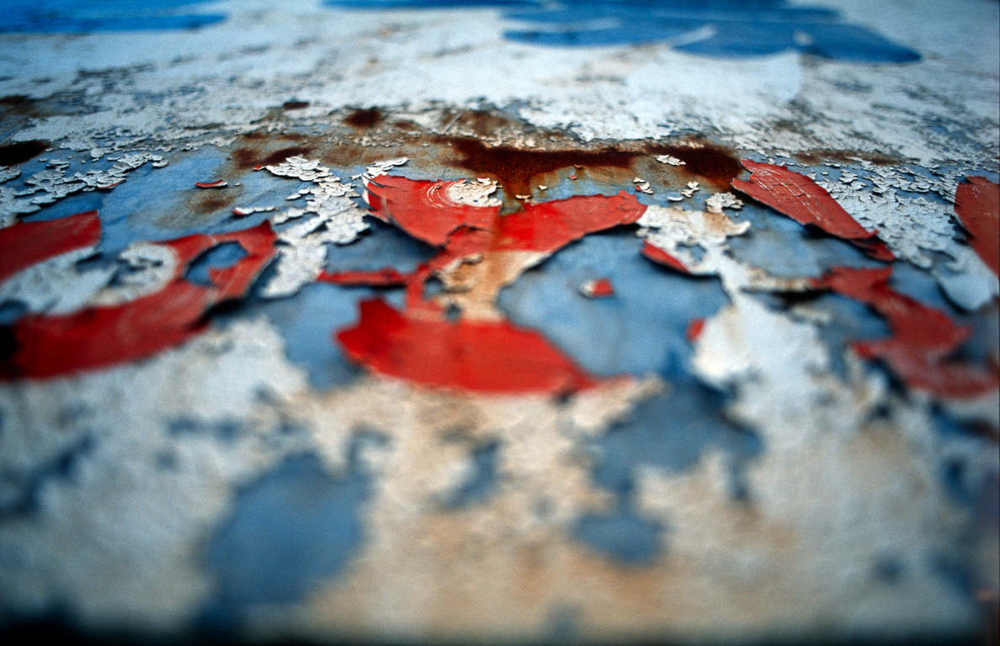
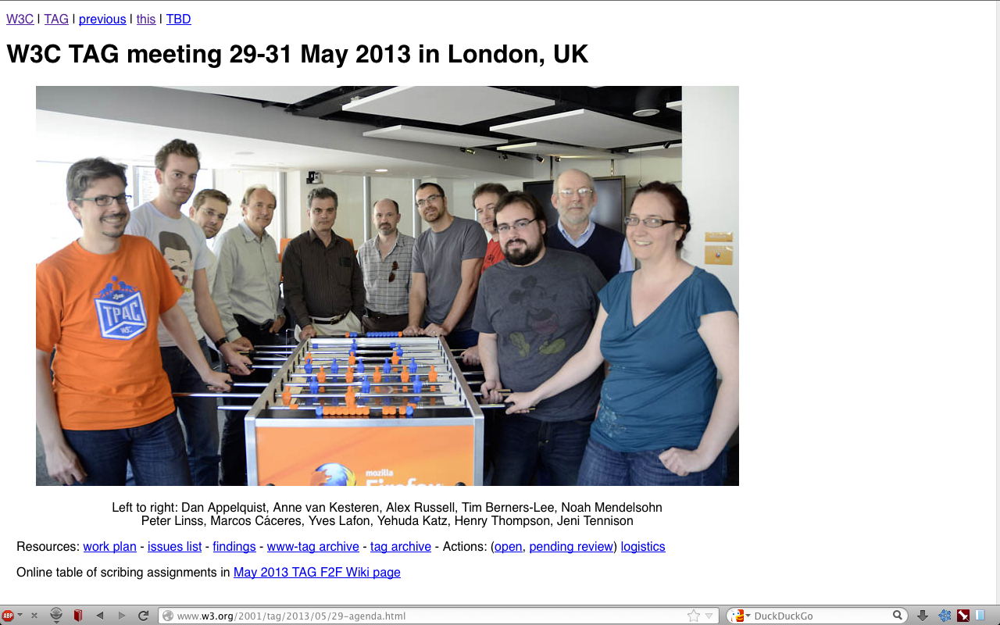

Esthétique et pratique du Web qui rouille
<
Paris Web 2013
Esthétique du ticket de caisse
Infobésité et information jetable
Publicité

http://www.w3.org/2001/tag/2013/05/29-agenda

Testament numérique

Gestion du Web et des contenus
Boites à outils, HTTP, URI, …
Dates: HTTP, URI et Contenu
Préservation de l'information numérique
Duplication comme modèle de préservation
Distribution et appropriation
Droit d'auteur et licence
Embrassons l'impermanence